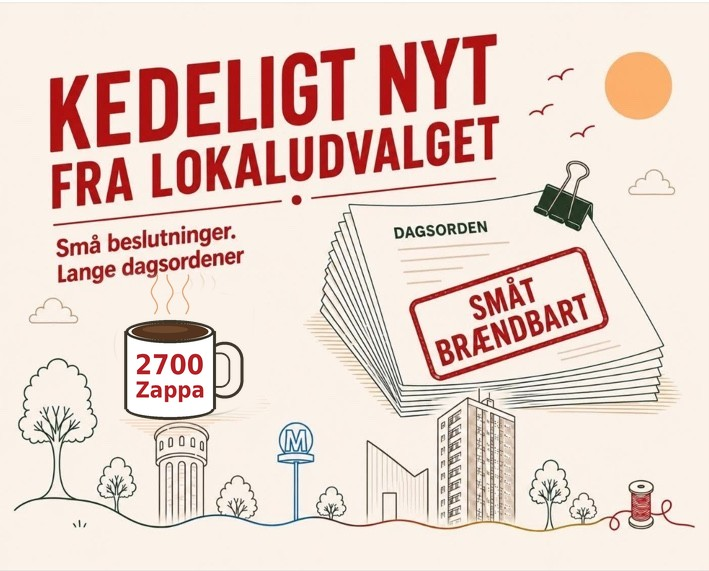

Clickbait fra Lokaludvalget
UGENS DRAMA – Mose-drama: Planker på vej?
Det skete der faktisk: Klima-, Miljø- og Teknikudvalget har godkendt at modtage knap 500.000 kr. fra Nordeafonden til en boardwalk i Kirkemosen. Pengene var oprindeligt bevilget til Utterslev Moses Venner. Når Borgerrepræsentationen har godkendt bevillingen inden jul, går kommunen i gang.
Status: VENTER PÅ BR · Tørhed: 2 af 5 citronmåner
Læs mereUGENS TAL – Bolig-chok: 5.008!
Det skete der faktisk: Så mange boliger dækker den boligsociale helhedsplan 'Fælles om Husum-Tingbjerg', med ca. 10.500 beboere. Planen er et samarbejde mellem AAB, SAB og fsb og skal bl.a. støtte børn og unge og hjælpe voksne i job. Lederen var inviteret til oplæg på lokaludvalgets seneste møde.
Status: ORIENTERING · Tørhed: 3 af 5 citronmåner
Læs mereUGENS VÆR MED – Pris-feber: Hvem vinder?
Det skete der faktisk: Foreningerne har stemt. Nomineret til Idrætsprisen: Brønshøj Boldklub Futsal og Husum Boldklub U16 Drenge. Til Lederprisen: Jane Willumsen, Lars Stage og Zbig Dudek samt Mary-Anna Aberdeen. Vinderne afsløres onsdag i næste uge kl. 17-19 i Husum Boldklub. Gratis og åbent for alle.
Status: ALLE INVITERET · Tørhed: 1 af 5 citronmåner
Læs mereSe de nominerede
UGENS SKÆVE – Du gætter aldrig: Gruppe om it-system?
Det skete der faktisk: Lokaludvalget bruger systemet GrantOne til ansøgninger til Kvikpuljen og Bydelspuljen. Det indstilles, at en arbejdsgruppe, åben for alle medlemmer og suppleanter, ser på arbejdsgangene, især for Bydelspuljen. Forslag ventes i januar. Referatet er endnu ikke offentliggjort.
Status: INDSTILLET · Tørhed: 5 af 5 citronmåner
Læs mereOgså i denne uge
På lokaludvalgets seneste møde skulle der tages stilling til en ekstra bevilling til lyskunst i Husum til Copenhagen Light Festival. Værkerne præsenteres på decembermødet.
Læs mere
Fire ansøgninger til Bydelspuljen 2026: Design værksted Husum og Mere Kreativ Ro var indstillet til støtte, to til afslag.
Læs mere
Kommunens kultur- og fritidsstrategi 2027-2030 er i høring til starten af januar. Lokaludvalgets temagruppe for kultur, fritid og fællesskab drøfter strategien.
Læs mere
Det var så sidste krumme af den citronmåne. Vi sætter vand over til en ny i næste uge.